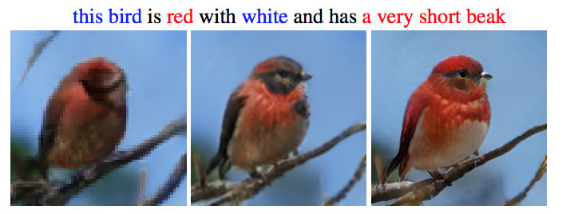

Generative Models
Going ahead to Generative Adversarial Networks it is essential to get what are generative models. Generative models are the models that use an Unsupervised Learning approach, where it uses simply the data elements to set up the model and sees configuration variables to make an outcome subject to the arrangement data. Generative models can make new models from the models that resemble various models present in the data yet are dubious as well. The most notable outline of a generative model can be a Naive Bayes Classifier, consistently used as a discriminative model. Various cases of generative models join the Gaussian Mixture Model and a high level model that is General Adversarial Networks.
What are Generative Adversarial Networks?
Generative Adversarial Networks, in any case called GANs is an algorithmic design that uses two neural networks, set one against the other and likewise the name "adversarial" to deliver as of late mixed events of data that can be confused with veritable data. GANs are used extensively in the field of picture age, video age and voice age. Ian Goodfellow introduced GANs and other individual experts, presented as a paper conveyed at the University of Montreal in 2014.Genuine working utilizing GAN began in 2017 with human countenances to take on image enhancement that produces better representation at extreme focus. Adversarial networks were in a general sense propelled by the blog that was composed by Olli Niemitalo in 2010 however a similar thought is known as Conditional GAN. GANs and adversarial training methods have been acknowledged as one of the most important findings in the field of machine learning. GANs' potential for both being a help and a plague is immense on the grounds that they can figure out how to impersonate any circulation of and from the information. GANs can be instructed to consequently make numerous things like pictures, music, discourse, or exposition.
GAN : Architecture
GANs contains two segments: a generator, which can be portrayed as a neural organization that makes new data events, while the other part, known as the discriminator, surveys them for authenticity. The discriminator picks whether or not each case of data that it studies has a spot with the genuine getting ready dataset. The discriminator furthermore rebuffs the generator for conveying unrealistic results. It can in like manner be depicted as adversarial, where the generator endeavors to hoodwink the discriminator by delivering data like those present in the arrangement set. The Discriminator attempts to distinguish the fake information from genuine information, and the two of them work at the same time to learn and prepare complex information, for example, sound, video or picture records.
Below is a pictorial representation of a GAN Architecture :-

Working of GAN Models
The GAN working depends on three standards, first and foremost to make the generative model learn, and the information can be produced utilizing some probabilistic portrayal. Secondly, the preparation of a model should be possible in any conflicting circumstance. Lastly, by utilizing the profound learning neural organizations and involving the computerized reasoning calculations for preparing the total framework. The essential thought of GAN network organization is for unaided ML methods yet in addition ended up being better answers for semi-managed and support learning. These variables generally together empower GAN networks as thorough arrangements in many fields like medical care, mechanics, banking, etc.
Applications of Generative Adversarial Networks
• Generate Photos of Human Faces - GAN’s are being used to generate the images of human faces that look exactly the same as a real human being.
• Generate Realistic Photographs - generation of manufactured photos using the strategy BigGAN that are basically indistinguishable from genuine photos.
• Image-to-Image Translation - generating a more clearer and real life image using a blur and old image also the sketches of the image can be given as an input and a real life image will be generated.
• Text-to-Image Translation - use GAN’s specifically StackGAN to generate real looking images using a textual description.

• Semantic-Image to Photo Translation
• Photos to Emojis
• Face Aging
• Photo Blending
• 3-D Object Generation
• Generating Images with Higher resolution and pixels
Add a comment